来源：https://hxrdzf4a0ay.feishu.cn/docx/KYgzdoQwhoA8inx2DE7cQlFin1f
【初步简介】
大家好我是小鱼，20年大学生。23年6月7日大学毕业。接触互联网有几年时间了。小鱼这个IP，3个月变现30W。下面是我的自我介绍∶
【互联网IP】小鱼
【现实地址】河南
【思维逻辑】互联网暴利收益，暴力引流，发烧友
【早期经历】
✔咸鱼有无货源，螺旋起号矩阵日收益2K，美女号全自动变现，单号日跑1K收益。小红书虚拟资源，日收益600+。
✔单号单人暴力引流300+，均日引流单人一天200+
【我可以提供的】
✔视频类项目拆解。引流创业粉，我自己的一些经验。
相信有很多人，跟我一样，刚进入社群这个大家庭。是迷糊的状态。前期我也是在专注于做项目。对于引流没太大的兴趣。但是随着认知和思维的精进，我发现了，做项目永远没有卖项目赚钱！
网赚项目有很多，眼花缭乱。但其底层逻辑都是一样的。当然有些项目对于小白来说不是太友好。这就变相的导致他们会有一种感觉。被割韭菜。
小白类比较推荐虚拟资源类型的项目，上手快，无需垫资。当然对于新老韭菜都知道，S粉是最后一条路。谁做都能做起来。应对市场去推咱们的产品。S粉全网割不完，包括每个正常男的都属于S粉。
第一次自己全篇手写给大家分享我跑通的项目。如有不妥，请大家批评指点。
首先非常感激我有认知可以进入咱们的社群，同时也感谢大家在我网创路上的帮助和指点！！！
大概是从22年开始吧，有意向开始去做创业粉，当时也是有很大的时间去实操和留意。在一次送对象回宿舍，坐学校摆渡车的时候，刷抖音，偶然刷到了关于项目拆解的视频。
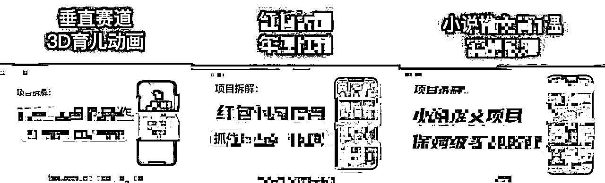
emm...首次看到，第一印象就是，剪辑麻烦，上手难度大。但是架不住感兴趣，想搞钱。本人当时算是付费意识算是高的。相对于来说，热门暴力的引流也好，项目也好，付费和收益是成正比的。这点我是有认知的。
在各种软硬性条件下，我决定先蹲坑看他的数据，以及进他粉丝群，了解他的模式。
说白了大专生什么都没，就是时间多，在回宿舍路上的时候，我进了他的粉丝群。到宿舍第一件事情就是添加他的VX。在经过长达一个月左右的蹲坑观察发现。是比较暴力的。
之前，包括目前玩项目拆解的，模式都是一样的。先搞私域。再引公众号。（也有一部分大佬只搞私域）模式如下图。
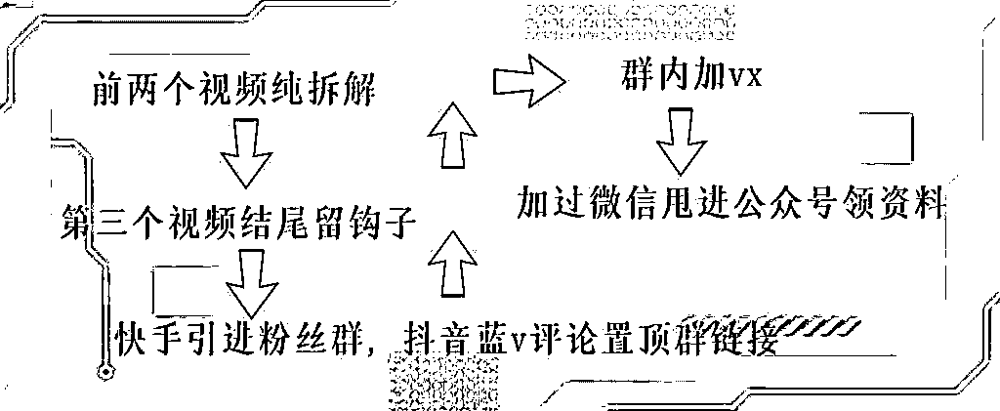
给大家上一张实际流程图。
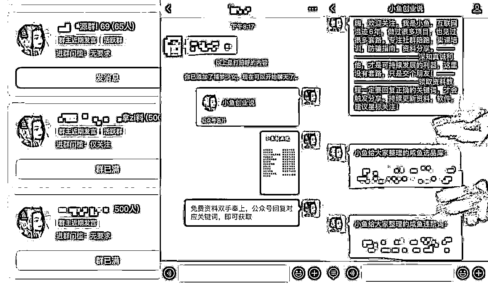
了解过他的项目收费过后，我选择沉默....（因处对象，几乎没有什么存款，当时还处于及时行乐）
这也是我从这一件事情中所学习出的道理，好在当时时间充沛...
当时他们都在上课的时候，我在逃课，用电脑自己学习B站上的剪辑手法，以及每天了解互联网最新的项目来做视频，和自己写稿子...
效果可想而知，慢且做出来的视频效果不好。后续看到有做PPT项目拆解的，开始模仿学习。
归根到底，我发现了，自主学习效果进度太慢。
第一次看项目拆解类型的，有两种一种是PPT模式的，还有一种是手绘的。当时对比稳定性来说，自我感觉手绘更稳定一点。然后就开始琢磨怎么去做。通过跟很多同行的讨论，发现有一款软件适合做手绘《美册》软件很全面，大部分素材APP里面都有。
（主要我对手绘感兴趣，其实目前相对来说，效果都一样。各方面能力都吃。稿子，关键词，封面，内容）
前期来说先去洗稿子。但是现在很简单，大家可以通过Chat Gpt让它来帮助我们写。写好后也可以通过一个微信小程序《轻抖》查一下有无违禁词。轻抖是免费的大家看一个15秒的广告就可以免费使用。针对违禁词。我们进行规避。
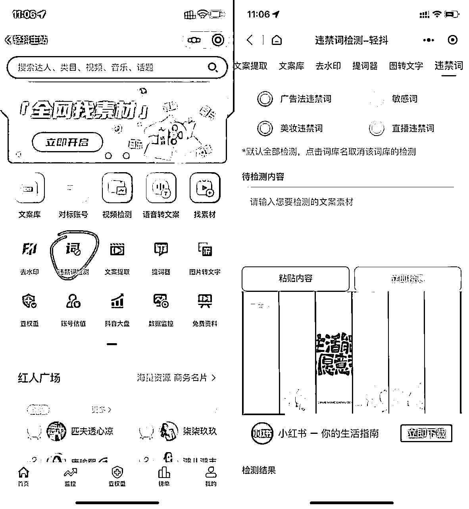
通过美册中的手绘功能我们可以直接转化文字成音频
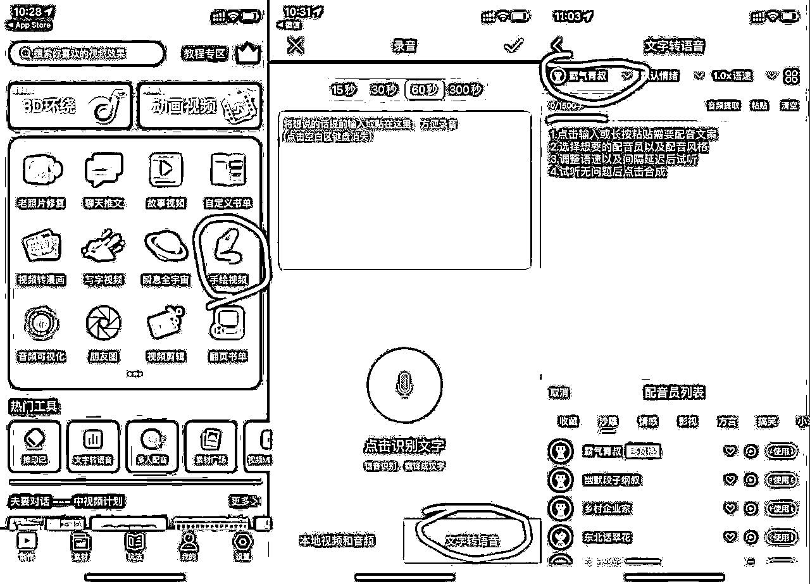
开始制作。音频自动生成以后软件自动进到下一步。我们选择比例16比9
这时候你会发现字幕过大，点击字幕选择一个合适的大小。再点击应用字幕。（应用字幕意义在于，可以让整个视频字幕大小一样）
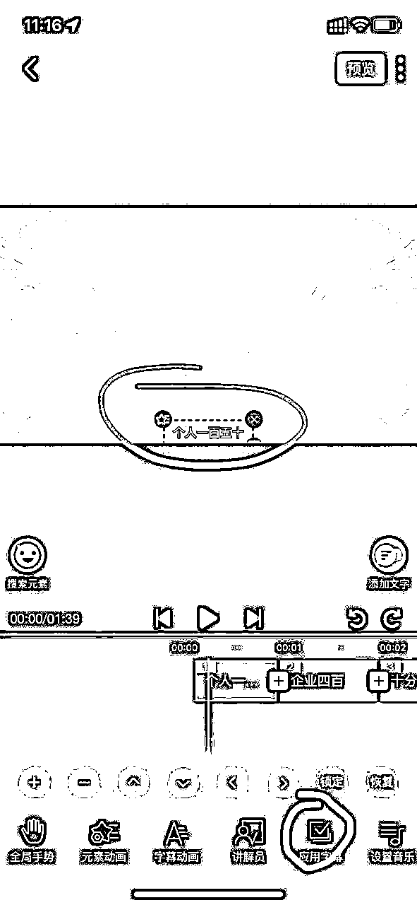
到这里就很简单了，发挥想象力进行填画面。我们可以通过搜索元素，直接查找我们想要的元素。逐步针对每句话进行填画面。画面效果直接就是手绘呈现，不需要我们再去进行任何设置。
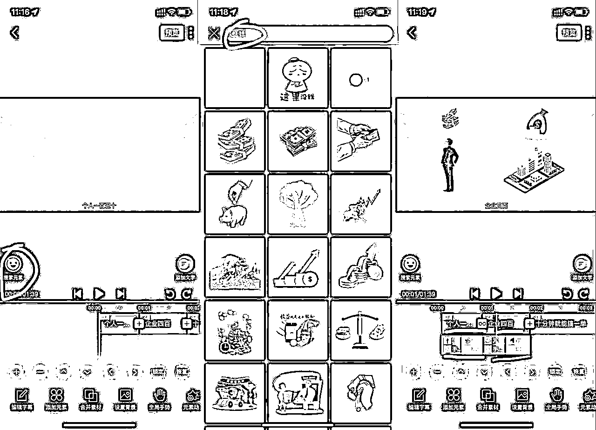
可想而知，跑的数据一般，四条作品三条五千多，一条两千多。中间放弃了一段时间，开始精进反思
在跟很多同行聊天中发现，短视频平台基本上已经成为了一部分人的百度，
他们会直接通过短视频平台，搜索自己的问题。这就是短视频SEO。
相对我之前做项目拆解，标题直接照抄，关键词的排名肯定不会靠前。
开始试着自己写稿子，或者精进同行的稿子，不再进行照搬照抄。
疫情跳墙出去跟音乐社的好哥们喝酒，一起聊收益最大化。他可以说是小白一个，我相对来说，比他了解的多。呢家伙属于有思路，相对年轻人来说，很好去接受通过互联网去变现的东西，原理也是都不难。
我们初步去实施的是，我放项目他去实操，然后让他带一批低门槛的学生资源，去变现，后续也是通过很多项目及管道收益，有了一波不错的收益
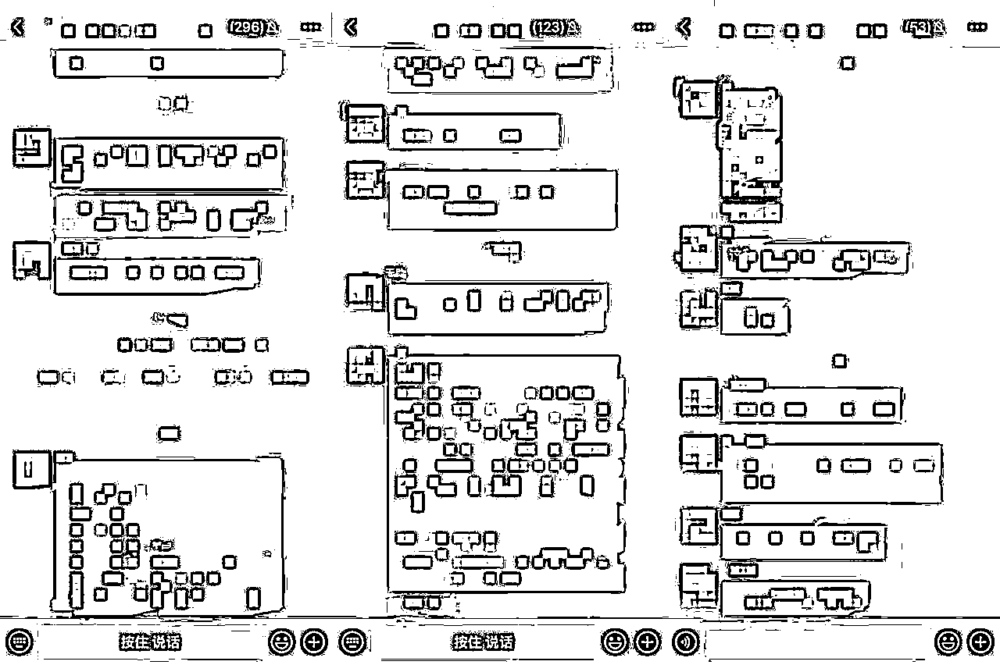
年后实习期，也是一直在做网创类型的项目，没做任何工作。其中也有留心学习剪辑视频，自己写稿子。
也是临近毕业季，跟对象分手了。心情复杂，经过一段时间自己沉淀，发现了。与其eom不如想办法搞钱。
可以说分手过后，精力更多了，四月初无聊自己蹲坑看到热门项目，也去写了一篇稿子，自己晚上剪辑了一条视频...
第二次剪辑用的是剪映，软件应用和美册是一模一样的。我们通过音频进行填词。每句话对应一个画面。这里不给大家细说了。前面介绍的很清楚了。
重点在于∶搜素关键词丶封面吸睛丶内容丶
项目弊端∶需要坚持，并不是每个号都是暴号，测试下来有的前期去发流量不大，但是只要有基础流量持续去发。四条视频以内肯定会暴。前提就在于满足前三个硬性条件！
视频抖音快手，同步发出后，可以说，我没有抱有太大的希望，视频也是自己搞的软件没用心去做。
11点左右发过视频，就是随便找了个静吧喝酒听歌。
第二天快到中午11点左右好友打电话，给我整醒，当时他这么跟我说，作品大暴，流量接不住了，让我换VX号接流。
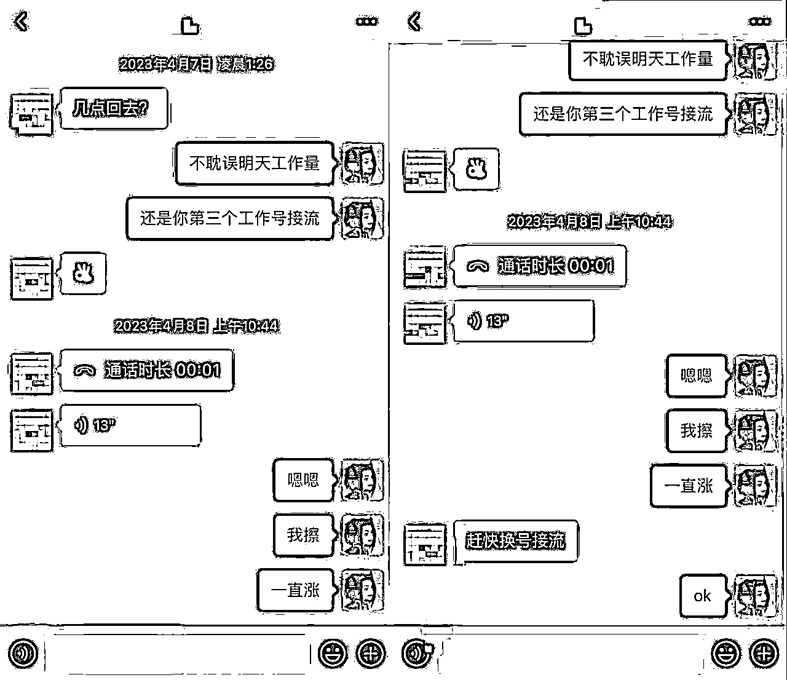
成就感是有的毕竟是自己去拆解跑通的项目没有付费，在接待过客户之后，晚上也是跟好哥们去喝酒聊了好久。
第一个做起来的账号，没有留数据图，因为感觉自己做不起来，就是发着玩。也考虑有人会质疑隐藏作品，或者只留爆款作品的，近段又做了一个号，从入门到爆款图如下！
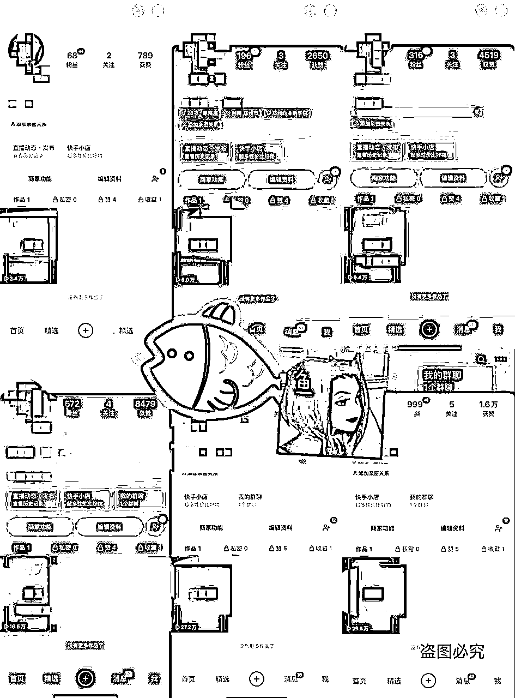
后续我也是对标了同行的作品，发现，都是两天一发。自我感觉除了付费之外，你项目可以跑通可以精进的就是，去模仿同行的模式！
在测试中发现，抖音也好，快手也好，都有同一种情况，就比如以上的图中在跑的号，第一条作品直接爆款视频。后续再去发作品，第一条作品没有推送完流量，他会吃掉你近段发作品的流量。
道理跟美女号是一样的。等他流量推送完成之后，才会继续推你最近发的作品。
但是期间怎么办？还是继续发作品，推流量不推都要去发！爆款视频就在下一条！
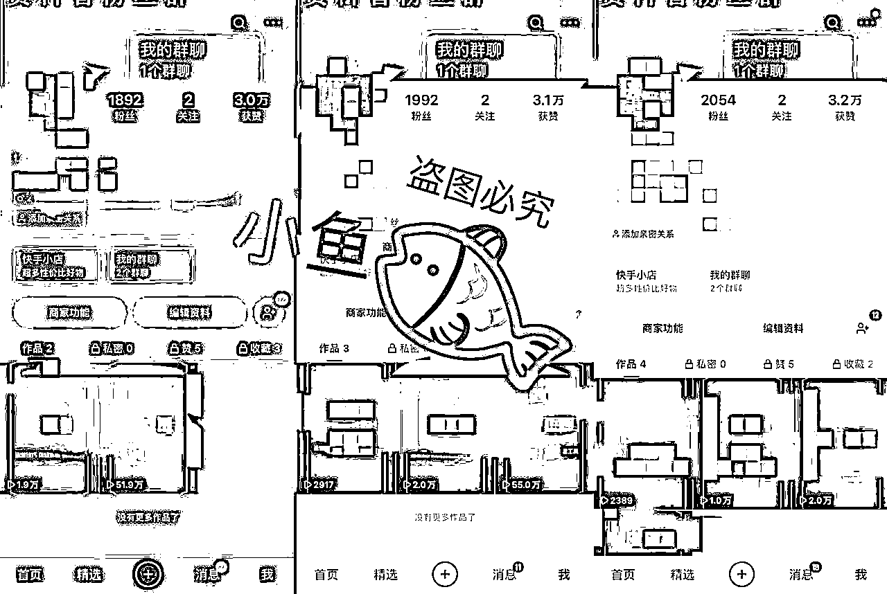
相对于项目拆解来说，来的粉只会有两种。
第一种∶白嫖粉。
第二种∶同行。（想学习你做视频的模式）
针对第一种粉，我们要做的很简单，朋友圈打造，发收益图。他们自然而然会来上车，当然客单价可以适当低一点。我目前在做的客单价非常低。128或者299当然这类客单价只针对他们这种小白。
尝试过客单价高的，转化率超级低，一百个粉转化2到5单，划不来，还是低客单来的舒服。
快手来的基本上都是学生粉。具体想怎么操作相信很多大佬变现思维比我多的多。
针对第二种粉，我就不多说了，同行很好说。视频剪辑模式复制给他就可以！
1.美册，必剪，剪映， （三选一，入门即可，操作没难度，其他剪辑软件也可以相对建议这三款APP，APP自带素材很多不用自己去找）
2.一部手机，手机电脑都有最好
2.魔音工坊 （配音方面，也可以应用其他软件。本人测试魔音工坊热门配音，比较有流量）
2.Chat Gpt （方便大家写稿，可以说是无脑操作。但是用不用没太大的影响）
3.思维灵活 （需要去注意最近网赚行业的项目，或者冷门的项目来做拆解）
在测试中也发现了，并不是你发了就是爆款。网赚这类的项目，就是玄学，有的号你去发就是可以暴。
但是有的号就是不行。当然我们也不要去迷信。项目拆解需要去坚持去做。前期可以没有效果。
但是以我的经验来讲，一定要有一个相对来说稳定的项目来支撑着你去做下去。不要全部精力都放在，这里面。也不要一点不去学。
相对来说项目拆解你可以跑通，日进100+创业粉没有一点问题。
当然还有很多种。做到日均200+也是很轻松。
我目前在做的引流∶
1.项目拆解 。
2.抖音，快手，小红书，截流。（手动脚本都有，粉泛）
3.抖音上麦。（一样沉淀粉）
4.seo。（有自己的网站）
5.学生资源裂变。
6.直播引流。（测试中）
7.电商平台，或者热门平台图文引流。（电商类相对来说比图文IP容易沉淀）
上述有的引流，对于小白来说不是太理想，但是视频类型项目拆解绝对。不管小白还是老手都是可以上手的。
针对目前网创环境来讲，入局永远不会晚。